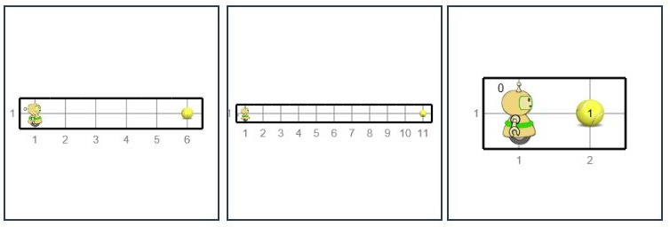

Решете няколко задачи наведнъж¶
Съдейки по програмите, които видяхме досега, може да се мисли, че трябва да се напише специална програма за всяка, дори малко по-различна задача. Ако това беше така, програмирането би било много, много досадна работа.
За да приложим една програма към група сходни задачи, е необходимо тази програма да се държи различно в различни ситуации. Това означава, че ни е необходим начин програмата да разбере текущата ситуация и след това да избере кои команди ще бъдат изпълнени, в зависимост от ситуацията. Под ситуацията имаме предвид броя на топките на квадрат или с Карел, положението на стените около Карел и така нататък. Програма, която би могла да получи отговори на въпросите, касаещи Карел и околностите му, също би могла да реши няколко подобни задачи или (с други думи) обща задача.
Питай Карел¶
В началото на уводната глава видяхме команди за Карел, с които го инструктираме да извърши някои действия (да върви напред, да завива наляво и надясно, да взема и пуска топки). Тогава споменахме, че има пет други функции, свързани с Карел. Тези пет функции се различават от предишните, тъй като, използвайки тези функции, задаваме някои въпроси и получаваме отговорите за Карел или квадрата, на който се намира. Ето тези функции:
front_is_clear()- питаме дали Карел може да продължи напред (има ли стени пред него). Получаваме отговора „да“ или „не“.num_balls_on_square()- питаме колко топки има на площада, на който е Карел. Получаваме броя на топките на площада.is_ball_on_square()- питаме дали има поне една топка на площада на Карел. Получаваме отговора „да“ или „не“.num_balls_with_karel()- питаме колко топки Karel в момента има с него. Получаваме броя на топките, които държи Карел.any_balls_with_karel()- питаме дали Карел има поне една топка със себе си. Получаваме отговора „да“ или „не“.
Не можем да напишем тези функции за даване на отговори като отделни оператори, както досега. Вместо това ние пишем тези функции като част от някои операции на Python. Нека разгледаме примерите.
Доколкото е необходимо (оператор while)¶
Един от начините за използване на функциите, които дават отговора е да използвате оператора while. Макар че операторът съществува в почти всички езици за програмиране и е написан много сходно на различни езици. В Python изглежда така:
Смисълът на оператора while е: докато условието е изпълнено, изпълнете операторът или операторите, които са написани с отметка по-долу. Състоянието на думата по-горе означава всичко, което е написано правилно в Python, и се свежда до да или не (техническият термин за това „нищо“ е логичен израз).
Правилата за писане на while, изискват писане на двоеточие: след условието. След условието (и двоеточие) пишем statements, които искаме да повторим, докато условието е изпълнено, тоест докато отговорът на въпроса вътре в условието е да (или Вярно). Тези повтарящи се statements съставляват тялото на оператора while и се пишат с отстъпи в следващите редове (същият брой интервали се добавят преди всяко от повторенията).
Условието се изследва преди всяко изпълнение на операторита в тялото на оператора while. Първият път, когато условието не е изпълнено, докато изпълнението на оператора (заедно с операторите в неговото тяло) е завършено, а следващото заявление, което трябва да бъде изпълнено, е посоченото под тялото на оператора while. Например, ако изпълним:
Карел ще продължи напред, доколкото може, тоест, докато не получим отговор „не“ на въпроса front_is_clear (), което означава, че Карел се е натъкнал на стена. Когато приключи да се движи, Карел ще вземе топката. В случай, че Карел вече е пред стената, командата move () изобщо няма да бъде изпълнена и Karel веднага ще вземе топката.
Всеки от следните примери и задачи е общ. Това означава, че за всяка задача при различни стартирания на програмата задачата ще изглежда подобно, но малко по-различно. Програмата трябва да бъде написана, за да реши задачата във всеки от тези подобни случаи.
Продължете напред и вземете топката¶

Пред Карел има един или повече квадрата, а на последния площад има една топка. Напишете програма, която ще накара Карел да вземе топката от последния квадрат.
Програмата трябва да се стартира многократно, тъй като при различни стартирания светът на Карел ще има различен брой квадратчета. Ето няколко примера за това как може да изглежда задачата:
{kind=link}
Ще използваме while statement, за да преместим Карел и след това да му кажем да вземе топката.
(Karel_while__many_squares_and_ball_at_the_end)
Може да се случи, че една програма често дава добър резултат, понякога дава лош резултат или се прекъсва поради грешка. Такава програма трябва да се счита за дефектна. Правилната програма винаги трябва да дава правилния резултат.
Задачи за упражнения¶
Вървете едно поле напред и вземете всички топки¶
Има точно едно поле пред Карел, а върху него има произволен брой топки. Карел трябва да ги вземе.
Следвайки инструкциите в програмата по-долу, Karel ще се опита да повтори командата pick_ball() безкрайно. Когато обаче Карел вземе всички топчета от този квадрат, ще получим съобщение за грешка, защото казахме на Карел да вземе топка от празния квадрат (не се колебайте да опитате това и да видите как изглежда съобщението за грешка). Опитайте се да коригирате програмата, така че Карел да взема топките само докато има.
(Karel_while__one_square_many_balls)
Вървете колкото можете, като вземате по една топка отвсяко поле¶
Пред Карел има едно или повече полета, а на всяко има по една топка. Напишете програма, която кара Карел да събира топките от всичките.
Стартирайте тази програма няколко пъти за да сте сигурни, че тя решава задачата, независимо от дължината на пътя на Карел.
Един while цикъл трябва да се използва както за движение на Карел, така и за вземане на топките.
(Karel_while__many_squares_and_ball_at_each)
Преместете всички топки от последното до първото поле¶
Пред Карел има един или повече квадрати, а на последния няколко топки. Карел трябва да вземе всички топчета от последния квадрат и да ги остави на първия квадрат.
(Стартирайте програмата няколко пъти.)
- В тази задача са необходими четири цикъла един след друг (не един вътре в друг):
В първия Карел стига до последния квадрат
Във втория Карел взема топките
В третия Карел се връща към началния квадрат
В последния Карел оставя всички топчета, които има със себе си
Разбира се, след първия или втория, Karel трябва да се обърне към стартовото поле (два пъти вляво или два пъти вдясно).
(Karel_while__bring_balls_to_front_square)
Поставете топките в горния ред¶
Светът на Карел този път се състои от два реда с една и съща, но неизвестна дължина. Карел е в долния ляв ъгъл, обърнат на изток. Всички квадратчета на горния ред са празни и всеки квадрат от първия ред съдържа една топка, включително квадрата, където е Карел. Задачата на Карел е да постави по една топка върху всеки квадрат от най-горния ред.
(Стартирайте програмата няколко пъти.)
(Karel_while__put_balls_in_upper_row)
We give instructions that resemble the program: